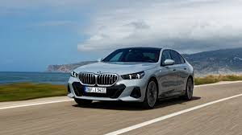
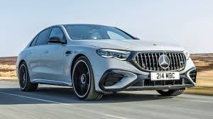
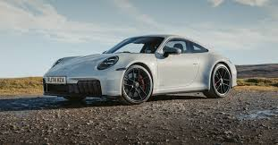

BMW
MERCEDES-BENZ
PORSCHE

The BMW M series is a performance-oriented line of vehicles from BMW, originally created to support the company's racing program. These cars are known for being higher-performance versions of standard BMW models, featuring modified engines, suspensions, and transmissions, and are tuned at a private facility at the Nürburgring racing circuit. The M series includes a wide range of vehicles, from sedans like the M5 and coupes like the M4 to SUVs such as the X5 M and electric models like the i5 M60 xDrive.
Example models Sedans: M5,
M3 Competition Sedan Coupes: M2, M4 Competition Coupé
SUVs: X5 M, X3 M, X6 M
Electric: i5 M60 xDrive, i7 M70
xDrive
Convertibles: M4 Competition Convertible
Roadsters: Z4 M40i

From the radiator shell to the elegantly dynamic rear end design with fascinating lighting details: the all new E-Class LWB speaks the language of exciting design and follows with the progressive stylistic elements that are characteristic of innovative dynamism. The split taillights impress with their new contour and an unmistakable star-look interior.The new E-Class sets new standards not just in terms of design. The latest-generation MBUX multimedia system ensures an even more personalised in-vehicle experience. Convenient functions, entertainment and everyday business features are intuitively and seamlessly linked. This is how the new E-Class offers you an even more pleasant, feel-good atmosphere — from the relaxing morning routine in the multicontour seat to the after-work playlist in Dolby® Atmos.
E 200: The entry-level gasoline model.
E 220d: The diesel-powered variant.
E 450 4MATIC: A more powerful gasoline model, often featuring
all-wheel drive.

The Porsche 911 was first unveiled to the public on 12 September 1963 when it was launched at the Frankfurt International Motor Show. Full production of the car began a year later in September 1964 at the Porsche factory in Zuffenhausen. The second production model to be made by the company after the Porsche 356, interestingly the 911 was originally called the 901. However, by the time the model went on sale it had become the 911 after a claim about naming rights from French car manufacturer, Peugeot. The 911 name not only stuck but has since become synonymous with success on both road and racetrack.
911 Carrera: The base model.
911 Carrera T: A more driver-focused
version.
911 Carrera S: An enhanced version of the Carrera.
911
Carrera 4S: An all-wheel-drive version of the Carrera S.
911
Carrera GTS: A performance-oriented model with more power.
911
Carrera 4 GTS: An all-wheel-drive version of the Carrera GTS.
911
Turbo: A high-performance variant.
911 Turbo S: The top-tier Turbo
model.
911 Targa: Features a distinctive Targa roof design.
911
GT3: A high-performance GT model.